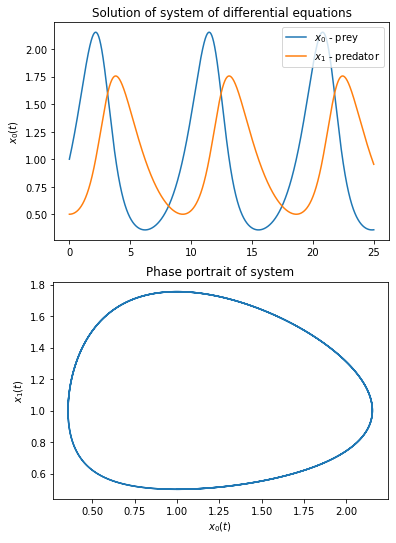

odepy is a module for numerical solving of ordinary differential equations and systems of equations of the order
odepy is a module for numerical solving of ordinary differential equations and systems of equations of the order in explicit form.
The aim of this project was to create a tool enabling the easiest way and with minimal involvement of the user, to solve systems of ordinary differential equations. This package contains implementations of the most popular numerical methods used to solve ODE's such as: Euler, Runge-Kutta method, Heun scheme.
NOTE: The module is still in its early stages of development. Thank you for any comments!
pip install -e git+https://github.com/msoczi/odepy#egg=odepy
import odepy
## Examples
### Example1
Let's consider a simple first-order differential equation with dependent variable
import math
def simple_equation(t, *x):
# x' = x + e^t
return (x[0] + math.exp(t), )
Note that the tuple returned by the function has a comma (this is because the implementation allows you to solve equations of any order , then the tuple will consist of
elements, for more refer to Example3 ).
The notation *x allows you to specify any number of arguments of the function, that is, any number of variables in the equation. Variables of the equation are defined as subsequent elements of the argument list x and we refer to them by the index, e.g. x[0], x[1], ....
The next step is to define a solver that will solve the previously defined equation. For example:
solver = odepy.ODE_solver(simple_equation, 10000, 2, -4, -0.1)
The arguments of which are accordingly (equation, N, T, t0, *args), where:
equation [function] - is the function defining the equation to be solved,N [int] - is an integer specifying the number of points at which the equation is calculated. Generally, the greater the number, the more accurate the solution,T [float] - the upper boundary of the interval t0 [float] - the lower boundary of the interval *args [float] - a set of initial conditions for dependent variables in the order So, the solver defined above will solve the equation on the interval [-4,2] with mesh density N=10000 and the initial condition x(-4)=-0.1.
Once we have defined the solver, we can start solving the equation.
solver.solve()
The default scheme used by solve() is the classical 4th order Runge-Kutta scheme. Other methods are also available. To use them, just specify the appropriate value in the methods argument. E.g.
solver.solve(method='euler')
Available methods:
rk4 - 4th Order Runge-Kutta schemerk2 - 2nd Order Runge-Kutta schemeheun - Heun schemeeuler - Euler scheme (1st Order Runge-Kutta scheme)The solution of the equation is stored in the attributes of the ODE_solver class. Each of the dimensions, i.e. , is stored in a separate attribute with just such a name. We can refer to them through:
solver.t_values
solver.x0_values
solver.x1_values
solver.x2_values
...
The solution of the equation can be drawn using the matplotlib module:
plt.plot(solver.t_values, solver.x0_values)
plt.xlabel('t')
plt.ylabel('x(t)')
plt.title('Solution of equation $\dot{x}=x+e^t$ for x(-4)=-0.1')
plt.show()

Below is an example of using odepy for a system of equations
With parameters r=1, a=1, s=0.5, b=0.5, and the initial conditions x_0(0)=1,x_1(0)=0.5 on the interval [0, 25].
# Equation parameters definition
r=1
a=1
s=0.5
b=0.5
# Definition of equation
def equ_fun(t, *x):
# x' = r*x - a*x*y
# y' = -s*y + a*b*x*y
return (
r*x[0]-a*x[0]*x[1],
-s*x[1]+a*b*x[0]*x[1]
)
# Defining 'solver' on interval [0, 25] with N=10000
# Initial conditions: x0(0)=1 and x1(0)=0.5
euler_solver = odepy.ODE_solver(equ_fun, 10000, 25, 0, 1, 0.5)
# Solving equation using explicit Euler method ('euler')
euler_solver.solve(method = 'euler')
# Now we can draw the solutions and phase portrait
import matplotlib.pyplot as plt
plt.plot(euler_solver.t_values, euler_solver.x0_values, label='$x_0$ - prey')
plt.plot(euler_solver.t_values, euler_solver.x1_values, label='$x_1$ - predator')
plt.legend()
plt.title('Solution of system of differential equations')
plt.xlabel('t')
plt.ylabel('$x_0(t)$')
plt.show()
plt.plot(euler_solver.x0_values, euler_solver.x1_values)
plt.title('Phase portrait of system')
plt.xlabel('$x_0(t)$')
plt.ylabel('$x_1(t)$')
plt.show()

DEFINITION
An ordinary differential equation of the order is an equation of the form:
In this equation, is the independent variable and
is the dependent variable.
Let satisfy the assumptions of the implicit function theorem locally with respect to
, then this equation can be written in the following form
On the other hand, the -th order equation in the explicit form can be easily reduced to the
systems of first order equation. To do this, use a substitution
for
i.e.:
Then if

equation of -th order
can be written as:
)
where is a vector

Convert the 3rd order equation
into a system of 3 first order equations.
Let

then
Finally we get a system of equations:
The above system of equations can be already defined in the odepy module.
def equation(t, *x):
return (
x[1],
x[2],
2*x[2]-5*x[1]+x[0]
)
For more examples, please refer to this page._
Mateusz Soczewka - msoczewkas@gmail.com
Thank you for any comments.